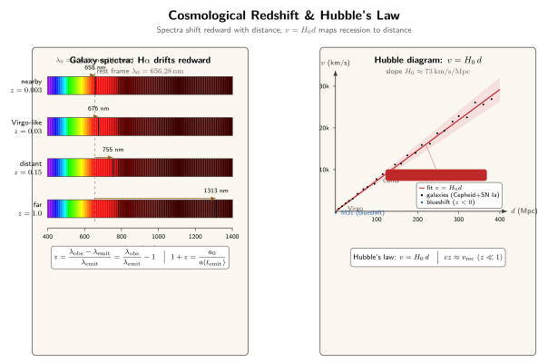

红移告诉我们宇宙在膨胀 — 怎么告诉的?
上一节我们看到量子力学如何让光子变成密码的载体, 这一节把镜头拉远 — 远到星系际, 远到宇宙诞生之初. 这里光的身份再次变化: 它不再是地面实验室里的工具, 而是宇宙寄给我们的"明信片". 邮戳是什么? 就是红移.
天文学家所说的红移, 远不只是"颜色变红"那么浪漫. 它是一条条谱线的位置偏移, 是一个可以精确测量到小数点后六位的数字, 更是整个现代宇宙学的地基. 没有红移, 就没有 Big Bang, 没有宇宙年龄 138 亿年, 也没有暗能量. 本节我们就来把这件事, 从谱线一直讲到标度因子.
一、谱线: 光的"身份证"与红移的定义
每一种原子在被激发或者电离复合时, 都会辐射出只属于自己的、波长非常精确的谱线. 氢原子的 Balmer 系列中 Hα 在实验室静止参考系里的波长是 $\lambda_{\rm Hα} = 656.28\,\text{nm}$; 钙离子的 H 线和 K 线分别在 $396.85$ 和 $393.37\,\text{nm}$; 中性氢的 Lyα 在紫外 $121.57\,\text{nm}$. 这些数字已经在地面光谱仪里被测到非常高的精度, 成了光的"身份证号码".
当我们把望远镜对准一个星系, 展开它的光谱, 会发现这些特征线整整齐齐出现, 但位置统一向长波端偏移. 定义红移
$$\begin{equation} z \;=\; \frac{\lambda_{\rm obs} - \lambda_{\rm emit}}{\lambda_{\rm emit}} \;=\; \frac{\lambda_{\rm obs}}{\lambda_{\rm emit}} - 1. \end{equation}$$
$z>0$ 叫红移, $z<0$ 叫蓝移. 仙女座大星云 M31 是我们极少数看到的蓝移天体之一, 它的 $z \approx -0.001$, 正朝银河系冲过来, 四十亿年后两家会撞一起. 绝大多数星系方向相反: $z$ 是正的, 且距离越远, $z$ 越大.
这个"越远越红"的经验规律, 就是我们要解释的核心现象. 但在解释之前必须先问: 谱线为什么会移位? 我们至少能想到三种机制.
二、三种红移机制: 多普勒、引力、宇宙学膨胀
第一种是经典多普勒红移. 光源相对观察者径向远离, 波峰间隔被拉长. 对非相对论速度 $v \ll c$, 有 $z \approx v/c$. 太阳自转让赤道两边的 Fe 线相对中心位置微小移动约 $\pm 2\,\text{km/s}/c \approx 7\times 10^{-6}$, 这就是一个典型的小 $v$ 多普勒. 恒星的自行、双星轨道、行星系统中行星对恒星的扰动 ("视向速度法"), 用的都是这同一条原理.
第二种是引力红移 (第 33 节展开讲). 光子要从一个深引力势阱里爬出来, 会损失能量 $\Delta E = -\Delta\Phi/c^2 \cdot E$ 量级. 太阳表面发出的光到达地球, 红移 $z_{\rm grav} \sim GM_\odot / (R_\odot c^2) \approx 2\times 10^{-6}$; 白矮星 Sirius B 上这个数升到 $\sim 3\times 10^{-4}$; 中子星表面可以到 $\sim 0.3$. 引力红移是爱因斯坦等效原理的直接后果, 是局域时空的效应.
第三种才是本节主角: 宇宙学红移. 在 Friedmann–Lemaître–Robertson–Walker (FRW) 度规下, 宇宙的空间部分被一个只和时间有关的标度因子 $a(t)$ 整体放大. 波沿空间传播时, 它的波长同步被这个 $a(t)$ 拉长. 严格的结果是
$$\begin{equation} \frac{\lambda_{\rm obs}}{\lambda_{\rm emit}} \;=\; \frac{a(t_{\rm obs})}{a(t_{\rm emit})} \quad\Longrightarrow\quad 1 + z \;=\; \frac{a_0}{a(t_{\rm emit})}. \end{equation}$$
这里 $a_0 \equiv a(t_{\rm obs})$ 是今天的标度因子 (常取为 1), $a(t_{\rm emit})$ 是光被发出的那个时刻的标度因子. 也就是说, 宇宙学红移测的不是"星系跑得多快", 而是"从光出发到现在, 宇宙膨胀了多少倍". $z=1$ 意味着宇宙从那时到现在膨胀了 2 倍, $z=9$ 就是膨胀了 10 倍.
这是一个关键的概念分水岭. 对小 $z \ll 1$, 宇宙学红移可以近似写成 $cz \approx v_{\rm rec}$, 仿佛星系"以速度 $v$ 远离我们", 多普勒语言是合适的. 但对大 $z$ 的远星系, 把它理解成"以超过光速 $v$ 远离我们" 既错误又没必要; 真正发生的是它和我们之间那一段空间被拉长了. 这一点我们第四节会细讲.
三、Hubble 定律: 用 Cepheid 量出宇宙
怎么知道星系远? 直接用三角视差? 太远了, 基线远远不够. Henrietta Leavitt 1912 年给出了一把更长的尺子: Cepheid 变星的周期-光度关系. 造父变星的脉动周期 $P$ 和绝对光度 $L$ 之间有一条很干净的对数直线, 知道 $P$ 就知道 $L$, 再比对观测到的视亮度 $F$, 由 $F = L/(4\pi d^2)$ 就能反解距离 $d$.
Edwin Hubble 1923 年在 Mount Wilson 的 100 英寸望远镜上在 M31 里认出造父变星, 定下 M31 是银河系以外的独立"岛宇宙"; 1929 年他把这套方法用在更多星系上, 配合 Vesto Slipher 已经积累的径向速度数据, 发现了那条震动整个物理学的图:

Hubble 定律写出来很朴素:
$$\begin{equation} v \;=\; H_0\, d, \end{equation}$$
其中 $H_0$ 就是今天的 Hubble 常数. 最新的数值之间还有所谓 "Hubble tension": Planck 卫星从 CMB 推出来的是 $H_0 \approx 67.4\,\text{km/s/Mpc}$, 而 SH0ES 等用 Cepheid + Type Ia 超新星的局域测量给出 $H_0 \approx 73.0\,\text{km/s/Mpc}$, 两者 $5\sigma$ 不合, 这是当前宇宙学里最吵的悬案之一.
做个数字估算. 取 $H_0 = 73\,\text{km/s/Mpc}$, 换算成 SI: $1\,\text{Mpc} = 3.086\times 10^{22}\,\text{m}$, 于是 $H_0 \approx 73\times 10^3 / 3.086\times 10^{22} \approx 2.37\times 10^{-18}\,\text{s}^{-1}$. 它的倒数是特征时间 $1/H_0 \approx 4.2 \times 10^{17}\,\text{s} \approx 1.34\times 10^{10}\,\text{yr}$, 正好和宇宙年龄 $\approx 138$ 亿年同阶. 这不是巧合, 而是物质+暗能量主导的 FRW 宇宙中 $t_{\rm age}$ 和 $1/H_0$ 差一个 $O(1)$ 因子的必然结果.
再看一个极端的例子. 已知 $z=7$ 的类星体, 光从它那里到我们, 波长被拉到 $(1+7)=8$ 倍长; JWST 在 2022 年报告过候选 $z \approx 13$ 的星系 JADES-GS-z13-0, 对应它发光时宇宙只有现在的 $1/14 \approx 7\%$ 大; 而宇宙微波背景 CMB 的光是从 $z = 1100$ 的"最后散射面"来的, 当时宇宙的线尺度只有今天的 $1/1100$. 换算到时间, 那对应宇宙诞生后大约 38 万年 — 所有熟知的恒星、星系都还没有形成.
四、两种极限: 近处的多普勒, 远处的 FRW
为什么我们一会儿把 $v/c = z$ 当多普勒, 一会儿又说 Hubble 流"不是真正的速度"? 我们来把两种极限看清楚.
考虑一束光从距离 $d$ 外发出, 在 FRW 宇宙里经历时间 $\Delta t = d/c$ 到达我们. 期间宇宙膨胀比例约 $\delta a / a \approx H_0 \Delta t = H_0 d/c$. 由 (2), $z \approx \delta a /a = H_0 d/c$. 代回 (3), 我们就重新得到了 $cz = v$. 这正是小 $z$ 近邻星系的情形: 宇宙学红移和多普勒红移的公式形式完全一致, 怎么解释都对.
但对 $z \gtrsim 0.5$, 光飞越的距离已经是几十亿光年, 期间宇宙的膨胀历史 $a(t)$ 不是一个常数 $H_0$ 就能概括的; 多普勒语言会给出 "速度 $v > c$" 这种伪问题. 真正的语言是 (2): 只要 $a$ 还有定义, $1+z$ 就是两个标度因子之比, 概念上干净利落, 没有"哪里跑过光速"这种顾虑. 对 $z=1100$ 的 CMB, 说它"以 1099 倍光速远离我们"是无稽之谈; 说"那一时刻宇宙线尺度是今天的 $1/1100$", 才是真正的物理内容.
这也带来一个小检验: 当 $z$ 趋近无穷大, 按 (2) 对应 $a(t_{\rm emit}) \to 0$, 就是传说中的 Big Bang 奇点; 当 $z \to 0$, 对应 $a(t_{\rm emit}) \to a_0$, 就是此时此刻"此地的光". 两个极限都很合情合理, 说明 (2) 这把尺是通到底的.
五、历史与哲学: 从 Slipher 的底片到 Lemaître 的方程
再说几位前辈. Vesto Slipher 1912 年在 Lowell 天文台首次测到仙女座大星云的蓝移 ($v \approx -300\,\text{km/s}$), 接着又一口气测了几十个 "星云" 的径向速度, 绝大多数是正的 — 数值上是惊人的 $+1000\,\text{km/s}$ 量级. 他本人没敢宣称宇宙膨胀, 但这份数据后来成了 Hubble 那张图最关键的原料.
Georges Lemaître 1927 年在比利时的一份法语杂志 (《布鲁塞尔科学学会年鉴》) 上, 从爱因斯坦的广义相对论出发独立推出了宇宙正在膨胀的结论, 给出了和 Hubble 两年后发表的几乎一样的线性律 $v = H d$, 数值也接近. 但法语期刊影响面有限, 西方主流直到 1931 年 Arthur Eddington 把它译成英文才开始广泛引用. 2018 年国际天文学联合会正式建议把 Hubble 定律改称 "Hubble–Lemaître 定律", 算是半个世纪后的补偿.
Einstein 自己呢? 1917 年他为了让宇宙保持静态, 往场方程里硬塞了一个宇宙学常数 $\Lambda$; 当 1929 年 Hubble 的结果摆出来, 宇宙分明在膨胀, 他懊恼地称这是自己"最大的错误". 颇具戏剧性的是: 1998 年 Type Ia 超新星的观测反过来告诉我们, 宇宙膨胀还在加速, $\Lambda$ 或者某种类似 $\Lambda$ 的暗能量, 根本就是实在存在的. Einstein 的"错误"兜兜转转, 又被请了回来.
从方法论上看, 这一整条线有一个规律: 只要把"光的特征频率"这一点抓死, 即使距离远到几乎所有经典工具都失效, 我们依然有话可说. 光的谱线是宇宙给我们的免费精度 — 它不需要我们去校准, 因为量子力学已经帮我们校准过了.
小结
红移不是"光颜色的一点情绪", 而是光这种身份最稳定的信号 (谱线) 被宇宙本身这个动态时空"按比例拉长"之后留下的印记. 从 (1) 的定义到 (2) 的 FRW 解释, 再到 (3) 的 Hubble 线性律, 我们得到了一套把"距离—速度—尺度因子—宇宙年龄"串起来的体系. 光在这里扮演了宇宙最诚实的史官: 每一条谱线都是过去某个时刻的一声问候, 它的波长里刻着那个时刻宇宙有多大. 下一节我们继续顺着宇宙学的主线走, 看光走的路本身如何被引力折弯 — 广义相对论下的引力透镜, 会告诉我们光与时空的另一重纠缠.
▲